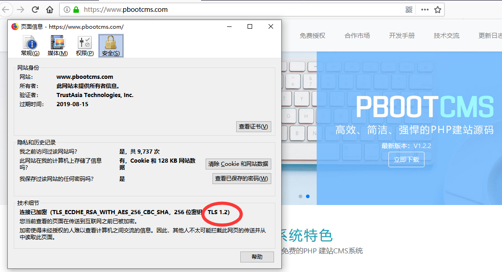

Windows 2008 R2系统开启IIS站点TLS1.2的支持
一、首先我来看开启TLS1.2后的效果
我们用火狐浏览器打开网站，然后点绿色的安全图标，查看显示更多信息，可以看到如下图，那么我们可以看到PbootCMS的官网已经开启TLS1.2的支持。

二、为什么要开启站点TLS1.2
1、加密标准一直在不断的发展，随着新的攻击的出现，旧的标准已经不能应对，以此推动更新更强大的标准来取代旧的标准。目前TLS 协议正在发生替换时期。TLS 1.0及1.1正逐步被淘汰，TLS 1.2正取代其位置。
2、未开启TLS1.2时，我们在站长工具中无法正常更新信息，并且被标注未非安全的https;
3、小程序的对接要求使用更加安全的TLS1.2
三、怎么开启站点TLS1.2
Windows 2008 R2以下不支持，服务器低于这个版本请先升级
1、手动方式：
1）在IIS中绑定好证书，怎么绑定证书请自行百度
2）运行注册表regedit
A、开启TLS1.2，在注册表中新增如下键值
[HKEY_LOCAL_MACHINESYSTEMCurrentControlSetControlSecurityProvidersSCHANNELProtocolsTLS 1.2Client]
"DisabledByDefault"=dword:00000000
"Enabled"=dword:00000001
[HKEY_LOCAL_MACHINESYSTEMCurrentControlSetControlSecurityProvidersSCHANNELProtocolsTLS 1.2Server]
"DisabledByDefault "=dword:00000000
"Enabled"=dword:00000001
B、关闭SSL2.0，在注册表中修改如下键值为0
[HKEY_LOCAL_MACHINESYSTEMCurrentControlSetControlSecurityProvidersSCHANNELProtocolsSSL 2.0Client]
"DisabledByDefault"=dword:00000000
3）、重启计算机
2、工具方式：
1）下载工具：
2）在服务器运行本软件，点击“Bes”按钮，然后必须确保有TLS 1.2被选中，SSL2 SSL3可以不用选择，然后点击Apply按钮，这时系统提醒您重启，点击重启，配置才能生效。
3）重启计算机
通过以上步骤我们就可以看到IIS站点的TLS1.2已经启用。